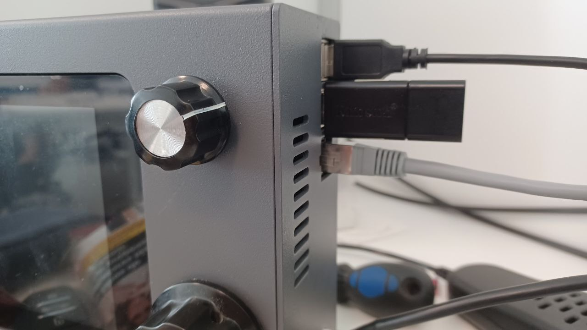

Next: HERMES installation Up: sBitx installation guide Previous: Initial setup to allow Contents
A USB pendrive of at least 8 GB is needed. A computer is needed to prepare the USB pendrive.
The installer should be downloaded from: https://aco-connexion.org/downloads/installer-image.img.zip.
After the download is finished, the file should be “unzipped”, as shown in Figures 2.8, 2.9 and 2.10. The extracted file should have the name: “installer-image.img”.
Then, for copying the installer to the USB pendrive, use the following software (or other raw image writer or flasher), called Etcher (supported on Windows, MacOS and Linux), available in https://etcher.balena.io/. The download is available on this website, as shown in Figure 2.11 (eg: for Windows choose the first option).
Run the software Etcher, choose the option “Flash from file” and select the file “installer-image.img”, as shown in Figures 2.12, 2.13 and 2.14.
After the copy is finished, insert the USB pendrive with the HERMES installer in the radio, as shown in Figure 2.15. Make sure the radio is turned OFF before inserting the USB pendrive.
|
 |